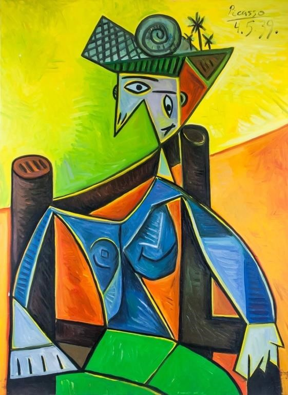
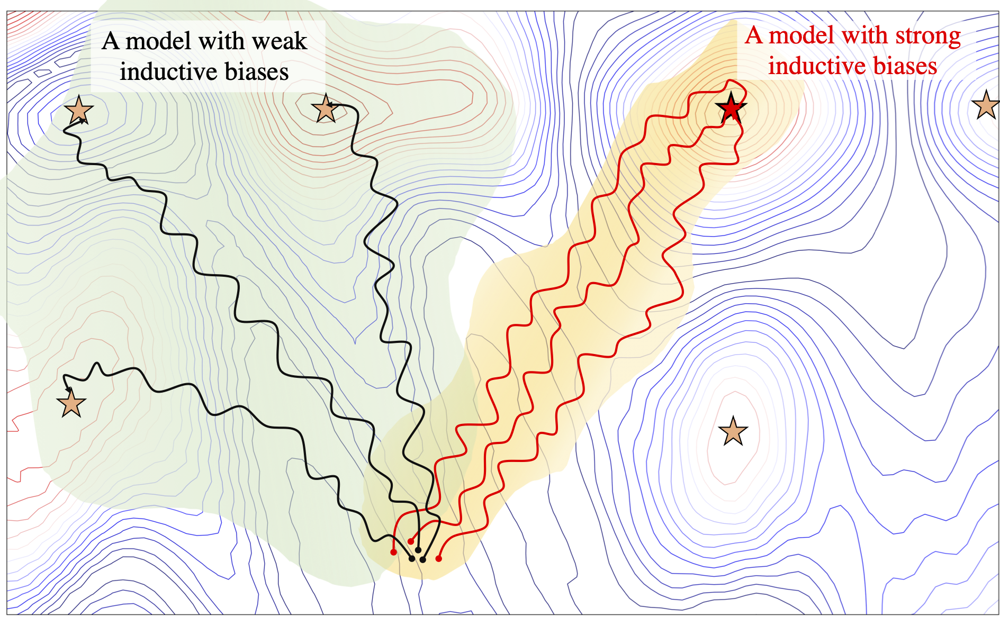
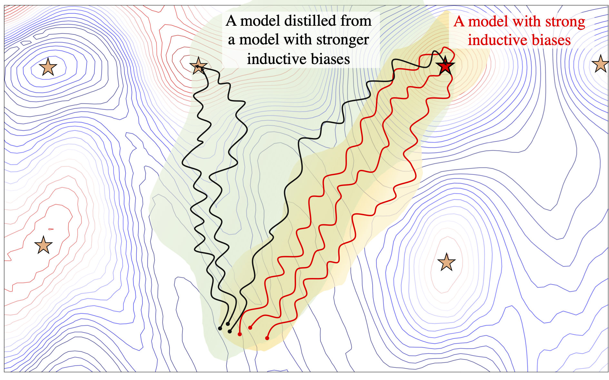

No free lunch theorem states, for any learning algorithm, any improvement on performance over one class of problems is balanced out by a decrease in the performance over another class (Wolpert & Macready, 1997). In other words, different learning algorithms would work better or worse and generalise differently on different tasks based on their inductive biases.
For example, consider the image classification problem. CNNs are the de facto choice for processing images, and in general data with grid-like topology. Sparse connectivity and parameter sharing in CNNs make them an effective and statistically efficient architecture. The particular form of parameter sharing in the convolution operation make CNNs equivariant to translation (Goodfellow et al., 2016). On the other hand, it is well known that this translation equivariance hurts their performance in cases where the position of the objects in the image matters. This is known as the Picasso effect, where you have all the pieces of an object but not in the right context! 
Another example are recurrent neural networks (RNNs). It has been shown that the recurrent inductive bias of RNNs helps them capture hierarchical structures in the sequences. But this recurrence and the fact that RNNs’ access to previous tokens is limited to their memory makes it harder for them to deal with long term dependencies and larger context. Besides, RNNs are rather slow because they have to process the data incrementally. On the other hand, Transformers have direct access to all input tokens and they are very expressive when it comes to representing arbitrary context sizes. Also, they can process the input sequence in parallel and hence they are remarkably faster than LSTMs. However, Transformers struggle to generalise on tasks that require capturing hierarchical structures when data is limited.
While it might not be possible to have one model that can single handedly achieve the desired generalisation behaviour on a wide range of tasks, it is possible to benefit from the inductive biases of different models during training and combine them at inference time to have one best model during inference! In this post we show that it is possible to transfer the effect of inductive bias through knowledge distillation.
What is Inductive bias?
Inductive biases are the characteristics of learning algorithms that influence their generalisation behaviour, independent of data. They are one of the main driving forces to push learning algorithms toward particular solutions (Mitchell, 1980). In the absence of strong inductive biases, a model can be equally attracted to several local minima on the loss surface; and the converged solution can be arbitrarily affected by random variations, for instance, the initial state or the order of training examples (Sutskever et al., 2013; McCoy et al., 2020; Dodge et al., 2020).

There are two types of inductive biases: restricted hypothesis space bias and preference bias. Restricted hypothesis space bias determines the expressively of a model, while preference bias weighs the solutions within the hypothesis space (Craven, 1996).
From another point of view, As formulated by (Seung et al., 1991) we can study models from two aspects:
- whether a solution is realisable for the model, i.e., there is at least a set of weights that makes the model perform the task.
- whether a solution is learnable for the model, i.e., it is possible for the model to learn that solution within a reasonable amount of time and computations.
In many cases in deep learning, we are dealing with models that have similar expressive power in the domain of the problems we want to solve, however, they have different preference biases. Meaning the desired solutions are realisable for all of them, but depending on the task at hand it is more easier for some of them to learn that solution compared to the others. So, once we have the desired solution, we might be able to guild the other models toward that solution. 
Having the Right Inductive Bias Matters
To understand the effect of inductive biases, we need to take a look at the generalisation behaviour of the models.
Let’s walk through the example of LSTMs and Transformers. When we train these models on language modelling, i.e., predicting the next word in the sequence! They both achieve more or less similar perplexities.
To measure how well they are able to capture the hierarchical structures in the data, we compute their accuracy on the verb prediction task, i.e, when the word to be predicted is a verb how well they recognise the number of that verb. To do this, the model needs to correctly match the verb with its subject.
Comparing different instances of LSTMs and Transformers, with different perplexities, we observe that LSTMs have a higher tendency toward solutions that achieve higher accuracy on the subject verb agreement task. In other words, lSTMs with higher perplexities, achieve higher accuracies than Transformers with lower perplexities.

Furthermore, we show the effectiveness of the CNNs inductive biases by comparing them with MLPs on the MNIST dataset. We train the models on original MNIST dataset and evaluate their performance on out of distribution sets from C-MNIST. We see that, while the the performance of MLPs and CNNs differs only slightly on the MNIST test set, there is a big gap between their performances on the out of distribution test sets.

Knowledge Distillation to the Rescue
There are different ways to inject inductive biases into learning algorithms, for instance, through architectural choices, the objective function, curriculum strategy, or the optimisation regime. Here, we exploit the power of Knowledge Distillation (KD) to transfer the effect of inductive biases between neural networks.
KD refers to the process of transferring knowledge from a teacher model to a student model, where the logits from the teacher are used to train the student. KD is best known as an effective method for model compression (Hinton et al., 2015) which allows taking advantage of the huge number of parameters during training, without losing the efficiency of a smaller model during inference. When we have a teacher that performs very well on a given task, using it to train another model can lead to an improved performance in the student model. The question is where does this improvement come from. Does knowledge distillation merely act as a regularization technique or are the qualitative aspects of the solution the teachers converges to reflected in the student model.
Interestingly, this improvement is not limited to the performance of the model on the trained task. Through distillation, the generalisation behaviour of the teacher that is affected by its inductive biases also transfers to the student model.
In the language modelling example, even in the case where the perplexity increases (worsens), the accuracy on the subject verb agreement task improves.

In the MNIST example, not only the performance of the model on the MNIST test set improves, it also achieves a better accuracy on the out of distribution sets.

Now, Let’s take a look at the training paths of the models when they are trained independently and when they are trained through distillation1. Looking at the training path for an independent MLP, an independent CNN, and an MLP that is distilled form a CNN, we see that while MLP and CNN seem to have very different behaviour during training, the student MLP with a CNN as its teacher behaves differently than an independent MLP and more similarly to its teacher CNN. This is interesting, in particular, since the student model is only exposed to the final solution the teacher has converged to and no information about the intermediate stages of training is provided in the offline KD.

Moreover comparing the final representations these models converge to, we see that as expected based on our assumptions about the inductive biases of these models, MLPs have more variance than CNNs, and Transformers have more variance compared to LSTMs. Also, distillation from a teacher with stronger inducive biases results in representations that are more similar to the representations learned by the teacher model. Finally, self-distillation does not significantly change the representations the models learn.


In this post, we briefly go through the finding of our paper on “Transferring Inductive Biases Through Knowledge Distillation”, where we explore the power of knowledge distillation for transferring the effect of inductive biases from one model to another. In this paper, We consider families of models with different inductive biases, LSTMs vs. Transformers and CNNs vs. MLPs, in the context of tasks and scenarios where having the right inductive biases can be critical. We study how the effect of inductive biases is transferred through knowledge distillation, in terms of not only performance, but also different aspects of converged solutions.
Codes to replicate the experiments we discussed in this post are available here!
-
To plot the training path of a model, we compute the pairwise representational similarity between different stages of training of the model. ↩